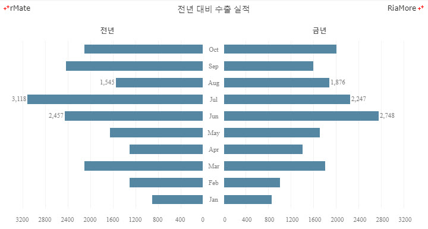
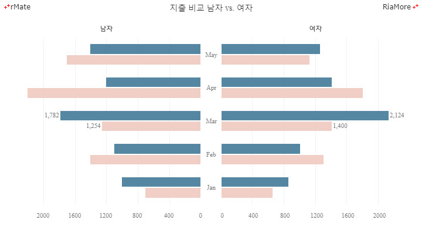
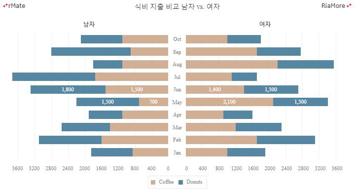
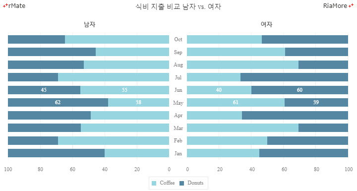
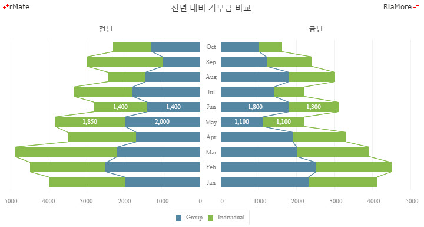
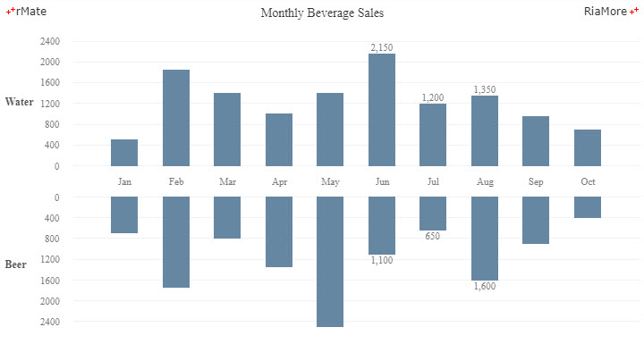
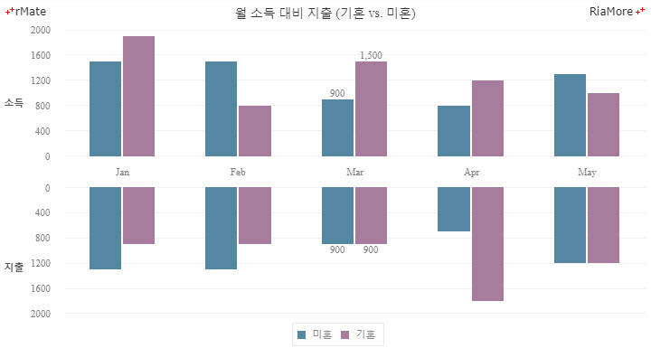
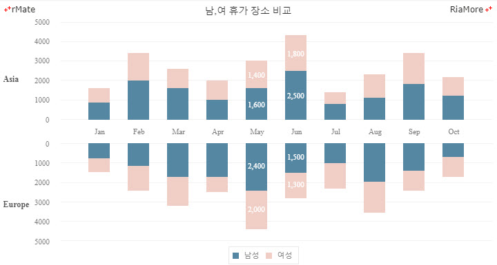
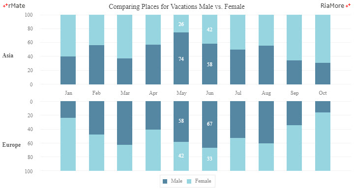
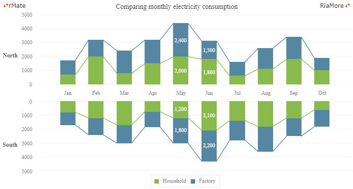

윙 차트
윙 차트는 데이터의 크기를 차트의 중앙에 표시되는 카테고리에서 시작하여 좌, 우로 증가하는 가로 막대 모양으로 표시(바 윙 차트)하거나 상, 하로 증가하는 세로 막대 모양으로 표시(컬럼 윙 차트)합니다.
바 윙 차트는 <Bar2DWingChart> 노드의 series 속성값에 <Bar2DWingSeries> 노드를 설정하여 생성할 수 있고,
컬럼 윙 차트는 <Column2DWingChart> 노드의 series 속성값에 <Column2DWingSeries> 노드를 설정하여 생성할 수 있습니다.
바 윙 차트는 바 차트의 속성을, 컬럼 윙 차트는 컬럼 차트의 속성을 그대로 사용할 수 있습니다.
추가적으로 바 윙 차트에서는 xFieldOpp 속성에 좌측 방향으로 표시되는 가로 막대를 위한 필드명을 지정하고, 컬럼 윙 차트에서는 yFieldOpp 속성에 아래 방향으로 표시되는 세로 막대를 위한 필드명을 지정합니다.
바 윙 차트
바 윙 차트는 <Bar2DWingChart> 노드의 series 속성값에 <Bar2DWingSeries> 노드를 설정하여 생성할 수 있습니다.
우측 방향으로 표시되는 가로 막대 값이 있는 데이터 필드는 <Bar2DWingSeries> 노드의 xField 속성에,
좌측 방향으로 표시되는 가로 막대 값이 있는 데이터 필드는 xFieldOpp 속성에 지정합니다.
다음은 바 윙 차트를 생성하는 코드와 이를 적용해서 출력한 차트의 예제입니다.
<Bar2DWingChart showDataTips="true" paddingTop="10" barWidthRatio="0.56">
<verticalAxis>
<CategoryAxis categoryField="Month"/>
</verticalAxis>
<series>
<Bar2DWingSeries xField="Profit" xFieldOpp="Cost" labelPosition="outside" showValueLabels="[5,6,7]" showValueLabelsOpp="[5,6,7]" displayName="This Year" displayNameOpp="Last Year">
<fill>
<SolidColor color="#5587a2"/>
</fill>
<showDataEffect>
<WingSeriesInterpolate duration="1000"/>
</showDataEffect>
</Bar2DWingSeries>
</series>
</Bar2DWingChart>

See the CodePen 알메이트 차트 - 바 윙 차트
다중 시리즈 바 윙 차트
일반적인 바 차트와 마찬가지로 다중 데이터 시리즈를 바 윙 차트에 표현할 수 있습니다.
표현하려는 개수만큼 <Bar2DWingSeries> 노드를 정의하여 다중 시리즈 바 윙 차트를 생성합니다.
다음은 두 개의 데이터 시리즈를 가진 바 윙 차트를 생성하는 코드와 이를 적용해서 출력한 차트의 예제입니다.
<Bar2DWingChart showDataTips="true" paddingTop="10">
...
<series>
<Bar2DWingSeries xField="Profit" xFieldOpp="Profit2" labelPosition="outside" displayName="Female" displayNameOpp="Male" showValueLabels="[2]" showValueLabelsOpp="[2]" halfWidthOffset="1">
...
</Bar2DWingSeries>
<Bar2DWingSeries xField="Cost" xFieldOpp="Cost2" labelPosition="outside" displayName="Female" displayNameOpp="Male" showValueLabels="[2]" showValueLabelsOpp="[2]" halfWidthOffset="1">
...
</Bar2DWingSeries>
</series>
</Bar2DWingChart>

See the CodePen 알메이트 차트 - 다중 시리즈 바 윙 차트
스택 바 윙 차트
일반적인 바 차트와 마찬가지로 스택 타입의 바 윙 차트를 표현할 수 있습니다.
바의 스택으로 표현하려는 개수만큼 <Bar2DWingSeries> 노드를 정의하고, <Bar2DWingChart> 노드의 type 속성을 “stacked” 으로 지정하여 스택 바 윙 차트를 생성합니다.
다음은 두 개의 데이터 시리즈를 가진 스택 바 윙 차트를 생성하는 코드와 이를 적용해서 출력한 차트의 예제입니다.
<Bar2DWingChart type="stacked" showDataTips="true" paddingTop="10">
...
<series>
<Bar2DWingSeries xField="Profit" xFieldOpp="Profit2" labelPosition="inside" displayName="Coffee" showValueLabels="[4,5]" showValueLabelsOpp="[4,5]" color="#ffffff">
...
</Bar2DWingSeries>
<Bar2DWingSeries xField="Cost" xFieldOpp="Cost2" labelPosition="inside" displayName="Donuts" showValueLabels="[4,5]" showValueLabelsOpp="[4,5]" color="#ffffff">
...
</Bar2DWingSeries>
</series>
</Bar2DWingChart>

See the CodePen 알메이트 차트 - 스택 바 윙 차트
100% 바 윙 차트
일반적인 바 차트와 마찬가지로 100% 타입의 바 윙 차트를 표현할 수 있습니다.
바의 100% 스택으로 표현하려는 개수만큼 <Bar2DWingSeries> 노드를 정의하고, <Bar2DWingChart> 노드의 type 속성을 “100%” 으로 지정하여 100% 타입의 바 윙 차트를 생성합니다.
다음은 두 개의 데이터 시리즈를 가진 100% 타입의 바 윙 차트를 생성하는 코드와 이를 적용해서 출력한 차트의 예제입니다.
<Bar2DWingChart type="100%" showDataTips="true" dataTipFormatter="{nft}" paddingTop="10">
...
<series>
<Bar2DWingSeries xField="Profit" xFieldOpp="Profit2" labelPosition="inside" displayName="Coffee" showValueLabels="[4,5]" showValueLabelsOpp="[4,5]" formatter="{nft}" color="#ffffff">
...
</Bar2DWingSeries>
<Bar2DWingSeries xField="Cost" xFieldOpp="Cost2" labelPosition="inside" displayName="Donuts" showValueLabels="[4,5]" showValueLabelsOpp="[4,5]" formatter="{nft}" color="#ffffff">
...
</Bar2DWingSeries>
</series>
</Bar2DWingChart>

See the CodePen 알메이트 차트 - 100% 바 윙 차트
바 윙 차트에 연결선 표시
바 윙 차트에 표시되는 가로 막대의 값들을 연결하는 선을 표시할 수 있습니다. 바 윙 차트에 연결선을 표시하기 위해서는 <Bar2DWingSeries> 노드의 lineToEachItems 속성을 “true” 로 지정합니다. 다음은 이에 대한 코드와 이를 적용해서 출력한 차트의 예제입니다.
<Bar2DWingChart type="stacked" showDataTips="true" paddingTop="10">
...
<series>
<Bar2DWingSeries xField="Profit" xFieldOpp="Profit2" lineToEachItems="true" labelPosition="inside" displayName="Group" showValueLabels="[4,5]" showValueLabelsOpp="[4,5]" color="#ffffff">
...
</Bar2DWingSeries>
<Bar2DWingSeries xField="Cost" xFieldOpp="Cost2" lineToEachItems="true" labelPosition="inside" displayName="Individual" showValueLabels="[4,5]" showValueLabelsOpp="[4,5]" color="#ffffff">
...
</Bar2DWingSeries>
</series>
</Bar2DWingChart>

See the CodePen 알메이트 차트 - 바 윙 차트에 연결선 표시
컬럼 윙 차트
컬럼 윙 차트는 <Column2DWingChart> 노드의 series 속성값에 <Column2DWingSeries> 노드를 설정하여 생성할 수 있습니다.
윗 방향으로 표시되는 세로 막대 값이 있는 데이터 필드는 <Column2DWingSeries> 노드의 yField 속성에, 아래 방향으로 표시되는 세로 막대 값이 있는 데이터 필드는 yFieldOpp 속성에 지정합니다.
다음은 컬럼 윙 차트를 생성하는 코드와 이를 적용해서 출력한 차트의 예제입니다.
<Column2DWingChart showDataTips="true" columnWidthRatio="0.52">
<horizontalAxis>
<CategoryAxis id="hAxis1" categoryField="Month" padding="1"/>
</horizontalAxis>
<series>
<Column2DWingSeries yField="Profit" yFieldOpp="Cost" labelPosition="outside" showValueLabels="[5,6,7]" showValueLabelsOpp="[5,6,7]">
<fill>
<SolidColor color="#6687a2"/>
</fill>
<showDataEffect>
<WingSeriesInterpolate duration="1000"/>
</showDataEffect>
</Column2DWingSeries>
</series>
</Column2DWingChart>

See the CodePen 알메이트 차트 - 컬럼 윙 차트
다중 시리즈 컬럼 윙 차트
일반적인 컬럼 차트와 마찬가지로 다중 데이터 시리즈를 컬럼 윙 차트에 표현할 수 있습니다.
표현하려는 개수만큼 <Column2DWingSeries> 노드를 정의하여 다중 시리즈 컬럼 윙 차트를 생성합니다.
다음은 두 개의 데이터 시리즈를 가진 컬럼 윙 차트를 생성하는 코드와 이를 적용해서 출력한 차트의 예제입니다.
<Column2DWingChart showDataTips="true" columnWidthRatio="0.58">
...
<series>
<Column2DWingSeries yField="Profit" yFieldOpp="Profit2" showLabelVertically="true" labelPosition="outside" displayName="Single" displayNameOpp="Single" styleName="seriesLabel" showValueLabels="[2]" showValueLabelsOpp="[2]" halfWidthOffset="1">
...
</Column2DWingSeries>
<Column2DWingSeries yField="Cost" yFieldOpp="Cost2" showLabelVertically="true" labelPosition="outside" displayName="Married" displayNameOpp="Married" styleName="seriesLabel" showValueLabels="[2]" showValueLabelsOpp="[2]" halfWidthOffset="1">
...
</Column2DWingSeries>
</series>
</Column2DWingChart>

See the CodePen 알메이트 차트 - 다중 시리즈 컬럼 윙 차트
스택 컬럼 윙 차트
일반적인 컬럼 차트와 마찬가지로 스택 타입의 컬럼 윙 차트를 표현할 수 있습니다.
컬럼의 스택으로 표현하려는 개수만큼 <Column2DWingSeries> 노드를 정의하고, <Column2DWingChart> 노드의 type 속성을 “stacked” 으로 지정하여 스택 컬럼 윙 차트를 생성합니다.
다음은 두 개의 데이터 시리즈를 가진 스택 컬럼 윙 차트를 생성하는 코드와 이를 적용해서 출력한 차트의 예제입니다.
<Column2DWingChart type="stacked" showDataTips="true" columnWidthRatio="0.58">
...
<series>
<Column2DWingSeries yField="Profit" yFieldOpp="Profit2" showLabelVertically="true" labelPosition="outside" displayName="Single" displayNameOpp="Single" styleName="seriesLabel" showValueLabels="[2]" showValueLabelsOpp="[2]" halfWidthOffset="1">
...
</Column2DWingSeries>
<Column2DWingSeries yField="Cost" yFieldOpp="Cost2" showLabelVertically="true" labelPosition="outside" displayName="Married" displayNameOpp="Married" styleName="seriesLabel" showValueLabels="[2]" showValueLabelsOpp="[2]" halfWidthOffset="1">
...
</Column2DWingSeries>
</series>
</Column2DWingChart>

See the CodePen 알메이트 차트 - 스택 컬럼 윙 차트
100% 컬럼 윙 차트
일반적인 컬럼 차트와 마찬가지로 100% 타입의 컬럼 윙 차트를 표현할 수 있습니다.
컬럼의 100% 스택으로 표현하려는 개수만큼 <Column2DWingSeries> 노드를 정의하고, <Column2DWingChart> 노드의 type 속성을 “100%” 으로 지정하여 100% 타입의 컬럼 윙 차트를 생성합니다.
다음은 두 개의 데이터 시리즈를 가진 100% 타입의 컬럼 윙 차트를 생성하는 코드와 이를 적용해서 출력한 차트의 예제입니다.
<Column2DWingChart type="100%" showDataTips="true" dataTipFormatter="{nft}" columnWidthRatio="0.54">
...
<series>
<Column2DWingSeries yField="Profit" yFieldOpp="Profit2" labelPosition="inside" displayName="Male" showValueLabels="[4,5]" showValueLabelsOpp="[4,5]" formatter="{nft}" color="#ffffff">
...
</Column2DWingSeries>
<Column2DWingSeries yField="Cost" yFieldOpp="Cost2" labelPosition="inside" displayName="Female" showValueLabels="[4,5]" showValueLabelsOpp="[4,5]" formatter="{nft}" color="#ffffff">
...
</Column2DWingSeries>
</series>
</Column2DWingChart>

See the CodePen 알메이트 차트 - 100% 컬럼 윙 차트
컬럼 윙 차트에 연결선 표시
컬럼 윙 차트에 표시되는 세로 막대의 값들을 연결하는 선을 표시할 수 있습니다.
컬럼 윙 차트에 연결선을 표시하기 위해서는 <Column2DWingSeries> 노드의 lineToEachItems 속성을 “true” 로 지정합니다.
다음은 이에 대한 코드와 이를 적용해서 출력한 차트의 예제입니다.
<Column2DWingChart type="stacked" showDataTips="true" columnWidthRatio="0.54">
...
<series>
<Column2DWingSeries yField="Profit" yFieldOpp="Profit2" lineToEachItems="true" labelPosition="inside" displayName="Household" showValueLabels="[4,5]" showValueLabelsOpp="[4,5]" color="#ffffff">
...
</Column2DWingSeries>
<Column2DWingSeries yField="Cost" yFieldOpp="Cost2" lineToEachItems="true" labelPosition="inside" displayName="Factory" showValueLabels="[4,5]" showValueLabelsOpp="[4,5]" color="#ffffff">
...
</Column2DWingSeries>
</series>
</Column2DWingChart>

See the CodePen 알메이트 차트 - 컬럼 윙 차트에 연결선 표시